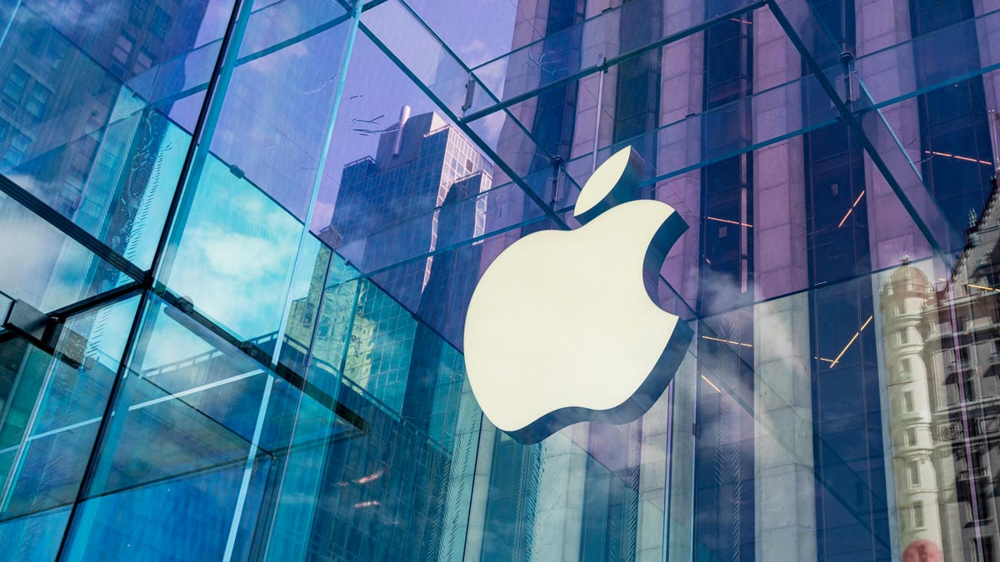

一、导语
2026 年 7 月 10 日，Apple 向美国加州北区联邦法院正式提交诉状，起诉 OpenAI 及其两名前 Apple 员工 Tang Tan 和 Chang Liu，指控他们窃取商业机密和违反合同。这起案件涉及 400 多名 从 Apple 跳槽到 OpenAI 的前员工、Apple 还未发布的产品设计机密，以及 OpenAI 正在秘密开发的、可能直接与 iPhone 竞争的硬件设备。
这不是一起普通的竞业禁止纠纷。Apple 在诉状中提出了一个令人震惊的主张：OpenAI 系统地策反 Apple 的核心硬件人才，并利用他们获取未发布产品的技术信息。如果 Apple 的主张成立，这将是硅谷历史上规模最大的商业机密案件之一，其影响可能重塑 AI 行业和智能手机行业的人才格局。
二、背景分析：从合作伙伴到法庭对手
Apple 和 OpenAI 的关系在过去两年经历了从蜜月到决裂的急剧转变。2024 年，两家公司达成合作协议，将 ChatGPT 集成到 Apple 的 Siri 和 Apple Intelligence 中。这一合作被视为 Apple 在 AI 领域追赶竞争对手的关键一步，也为 OpenAI 带来了数亿 iPhone 用户的潜在触达渠道。
然而，表面的合作掩盖了深层的人才战争。据诉状披露，到 2026 年，已有超过 400 名 Apple 前员工在 OpenAI 工作——这个数字之大令业界震惊。其中最为关键的人物是 Tang Tan，他在 Apple 任职 24 年，离职前担任 iPhone 和 Apple Watch 产品设计副总裁，后于 2023 年底离开 Apple，短暂加入 Jony Ive 的 LoveFrom 设计工作室，最终在 2025 年 加盟 OpenAI 担任首席硬件官。
另一名被告 Chang Liu 在 Apple 工作 8 年，是一名软件工程师，他的角色在诉状中被描述为「Apple 内部招聘渠道的关键节点」——涉嫌帮助 OpenAI 识别和招募其他 Apple 员工。
「这家公司（OpenAI）被指控不仅仅是雇佣了几名前 Apple 员工——它在系统地、有组织地利用这些员工获取 Apple 最宝贵的商业机密。」
Apple 在诉状中描述了一个令人不安的模式：OpenAI 的员工在面试 Apple 的求职者时，会要求他们携带公司的硬件产品和设计原型。Tang Tan 本人被指控在 OpenAI 的内部招聘过程中，使用 Apple 未发布项目的保密代号，并教唆即将离职的 Apple 员工如何规避公司的信息安全监控。
三、核心内容：诉讼的四大指控
指控一：系统的商业机密盗窃
Apple 在诉状中详细描述了 OpenAI 的「盗窃模式」。核心指控是 Tang Tan 和 Chang Liu 利用他们在 Apple 积累的人脉和内部信息，为一个更大规模的商业机密转移网络充当枢纽。被盗信息包括未公开产品的技术规格、工程演示文档、供应链细节和专有设计数据。
特别值得关注的是，Apple 声称这些信息被直接用于 OpenAI 正在开发的硬件产品——传闻中的「AI 智能手机」，分析师 Ming-Chi Kuo 此前预测该设备可能在 2028 年 面世。如果这一指控成立，意味着 OpenAI 的硬件开发在起步阶段就涉嫌依赖从 Apple 盗取的信息。
指控二：Apple 的早期警示被无视
Apple 在诉状中披露了一个耐人寻味的细节：早在 2026 年 2 月，Apple 就通过正式信函向 OpenAI 提出了关切，要求其调查并纠正员工不当访问 Apple 机密信息的问题。Apple 称 OpenAI「从未回复」这封信。
这一细节如果属实，将严重削弱 OpenAI 在法庭上的辩护立场——它意味着 OpenAI 在获得正式通知后，既没有开展内部调查，也没有采取任何预防措施。
指控三：高度组织化的招聘策略
Apple 指控 OpenAI 的招聘策略不仅仅是「挖人」，而是有组织的商业情报收集。诉状称，OpenAI 的面试官会直接询问 Apple 求职者关于未发布产品的内部信息，包括元件选型、供应商选择和设计决策过程。至少有一名 Apple 员工被要求在面试中回答关于「组件和供应商选择流程」的详细问题。
Chang Liu 被指控在 Apple 内部充当 OpenAI 的「招聘代理」，不仅在社交媒体上宣传 OpenAI 的职位，还在 Apple 的办公室内鼓励同事集体跳槽，甚至指导其他 Apple 员工如何在面试 OpenAI 职位前「应该学习什么」。
指控四：OpenAI 员工数量形成规模效应
Apple 强调，这不仅仅是几个个案的孤立行为——超过 400 名 原 Apple 员工在 OpenAI 工作，形成了一个难以监管的信息泄露网络。如此大规模的跨公司人员流动，结合高层管理人员（Tang Tan 曾是 Apple 产品设计的核心人物）的参与，使得商业机密保护几乎不可能。

四、各方反应：硅谷的暗流涌动
Apple 的正式声明
Apple 发言人在发给媒体的声明中表示：「在 Apple，我们的团队不断开发突破性技术来创造世界上最好的产品和服务，保护他们的工作和知识产权是我们极为重视的事情。最近出现了重要证据，表明 OpenAI 雇佣的个人错误地获取了 Apple 关于未发布技术、流程和产品的机密和保密信息。我们将永远捍卫我们团队的辛勤工作和创新，并正在采取一切适当措施。」
OpenAI 的沉默与反击传闻
截至本文发布，OpenAI 尚未就诉讼发表官方声明。但值得注意的是，2026 年 5 月，Bloomberg 曾报道 OpenAI 正在准备对 Apple 采取法律行动，涉及 ChatGPT 与 Siri 集成合作中的争议。Apple 在本次诉状中特别澄清，其与 OpenAI 的商业合作「不是本案的核心问题」，但这一背景暗示两家公司之间的法律纠纷可能才刚刚开始。
行业观察者观点
「这不仅仅是 Apple 对 OpenAI 的诉讼——这是整个科技行业关于人才流动和无形的知识产权边界的一次重大测试。硅谷一直依赖于人才自由流动的生态系统，但当一个公司有系统地组织前员工输出机密信息时，这个系统的平衡就被打破了。」
分析人士指出，该案件可能对科技行业的人才招聘产生深远影响。如果 Apple 胜诉，其他科技公司可能需要重新审视其招聘来自竞争对手员工的政策和内部流程。特别是 AI 行业的人才争夺战已经进入白热化阶段，各大公司都在以高薪高职位争抢核心人才。
前 Apple 设计师 Jony Ive 的处境
一个有趣的侧面是，Tang Tan 在离开 Apple 后最初加入了 Jony Ive 的 LoveFrom 设计工作室，随后才转投 OpenAI。Ive 本人与 OpenAI CEO Sam Altman 的关系密切，据传正在合作开发一款 AI 硬件设备。Tang Tan 在 Ive 工作室期间接触了多少信息、这些信息是否与 OpenAI 的硬件计划相关，可能成为案件的一个关注点。
五、深度解读：这场诉讼意味着什么？
智能手机行业的地震
如果 OpenAI 确实在利用从 Apple 获取的商业机密开发 AI 手机，这将是智能手机行业数十年来最严重的知识产权案件。这不仅涉及 Apple 的当前产品（iPhone 17/18 系列），还涉及其未来3-5 年的产品路线图。Apple 每年在研发上的投入超过 300 亿美元，而 iPhone 贡献了其约 50% 的收入——保护这些研发成果对 Apple 来说是生存问题。
AI 公司与消费电子公司的碰撞
这一案件标志着一个更大的趋势：AI 公司开始从「软件和服务提供商」转变为「硬件制造商」。OpenAI 招募 Apple 的硬件团队意味着它正在认真对待硬件业务。同样，Anthropic 也在组建硬件团队，Google 有自己的 Pixel 部门，Meta 有 Reality Labs。当 AI 公司开始造硬件，它们必然与 Apple、Samsung 等传统消费电子巨头发生正面冲突。
人才流动的法律红线
硅谷一直以人才自由流动为荣，但 Apple v. OpenAI 案件可能重新划定法律红线。核心问题在于：一个前员工可以将多少记忆中的知识带到新公司？如果 Tang Tan 只是利用他在 Apple 24 年的经验和直觉来指导 OpenAI 的硬件设计，这属于合法的知识转移。但如果他使用了具体的文档、规格、设计图纸或供应链信息，这就越过了法律红线。
Apple 在诉状中非常小心地将其指控定位在后者——具体的文件和数据盗窃，而非仅仅利用经验和知识。这一区分将成为案件胜负的关键。
对 OpenAI IPO 的潜在影响
OpenAI 此前被广泛预期即将启动 IPO，估值可能超过 3000 亿美元。这类商业机密诉讼可能对 IPO 进程产生重大影响——不仅增加了法律风险敞口，还可能使潜在投资者重新评估 OpenAi 的管理文化和治理水平。相比之下，Anthropic 已经先一步启动 IPO 流程并获得了 9650 亿美元 的估值——这一时间差可能让竞争格局发生变化。
六、总结
Apple 起诉 OpenAI 不仅是一场法律纠纷，更是 AI 时代科技巨头关系加速重组的标志性事件。400+ 前员工的集体跳槽、24 年资历的核心高管、一个可能彻底改变智能手机市场的 AI 硬件产品——这些要素共同构成了硅谷多年来最具戏剧性的商业机密诉讼。无论最终判决结果如何，这一案件都将深刻影响 AI 公司与消费电子公司之间的人才、技术和竞争边界。